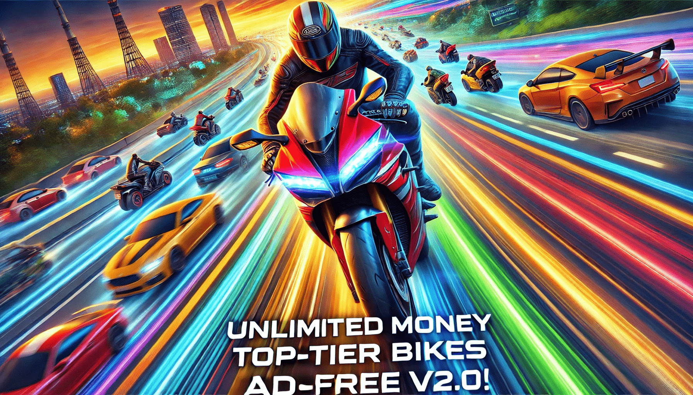

Get Traffic Rider Mod APK V2.0! Enjoy Unlimited Fun Like Never Before
If you're a fan of mobile racing games, chances are you've stumbled across Traffic Rider. It’s one of those addictive, adrenaline-pumping games where you dodge cars, complete missions, and race your way to glory. But let’s be real—progressing in this game can sometimes feel like trying to ride a unicycle uphill. Enter the savior of impatient gamers: Traffic Rider Mod APK V2.0!
With this mod, you’ll get unlimited money, access to top-tier bikes, and—drumroll, please—ad-free gameplay. That’s right, no more annoying pop-ups interrupting your need for speed. If that doesn't already sound like a dream, wait until you hear about the 90+ missions you can conquer and the chance to top the global leaderboards. So, buckle up (or helmet up?) and let’s dive into why you need this mod in your life.
What is Traffic Rider?
Traffic Rider is a popular mobile racing game developed by Soner Kara. It allows players to ride motorcycles through busy traffic, completing various missions while avoiding obstacles and earning points. The game features a first-person perspective, providing an immersive experience that makes you feel like you're actually on the bike. With over 90 missions and numerous customization options, it keeps players engaged for hours on end.
What’s Traffic Rider Mod APK Anyway?
For the uninitiated, let me break it down. Traffic Rider Mod APK is like the VIP pass to the regular game. Imagine showing up to a theme park and skipping the lines, getting unlimited rides, and having access to the exclusive roller coaster at the back. That’s what this mod does for Traffic Rider.
The modded version unlocks everything you’ve ever dreamed of in the game—like endless cash to buy all those shiny superbikes you drooled over in the original version. Forget grinding for hours just to buy a single upgrade. With the mod, you can ride in style from the very first mission.
The Appeal of the Mod APK
The Traffic Rider Mod APK V2.0 takes everything that makes the original game great and amplifies it. Here’s what you can expect:
- Unlimited Money: Forget about grinding for coins! With unlimited money, you can purchase any bike you desire and upgrade it to your heart's content.
- All Bikes Unlocked: No more waiting to unlock your favorite models. Jump straight into the action with access to all bikes from the start.
- Ad-Free Gameplay: Ads can be annoying, especially when you're in the zone. The mod version removes all ads, allowing for uninterrupted racing.
- Enhanced Graphics: The mod also boasts improved graphics, making your racing experience even more visually stunning.
Features That Make It Stand Out
Diverse Bike Selection
With the mod version, you can choose from a wide variety of motorcycles—each with unique characteristics and performance stats. Whether you prefer speed demons or heavy cruisers, there’s something for everyone.
Engaging Missions
The game includes over 90 missions that challenge your skills and keep you entertained. From time trials to overtaking challenges, each mission offers a unique twist that requires quick reflexes and strategic thinking.
Realistic Audio Experience
One of the standout features of Traffic Rider is its realistic engine sounds recorded from real motorcycles. This attention to detail enhances immersion and makes every ride feel authentic.
First-Person Perspective
Riding in first-person view adds a layer of excitement as you weave through traffic at breakneck speeds. It’s like being in your own action movie—minus the stunt double!
Tips for Dominating Traffic Rider
- Speed is Key: The faster you ride, the more points you earn. So don’t be shy about pushing those limits!
- Close Calls Rewarded: Overtake cars closely or drive in the opposite direction on two-way streets for bonus scores.
- Perform Stunts: Doing wheelies or other stunts not only looks cool but also earns you extra points.
- Upgrade Wisely: Use your unlimited money to enhance your bike's brakes, tires, and engine for better performance.
Conquering the Global Leaderboards
With Traffic Rider Mod APK V2.0, climbing to the top of the global leaderboards is within reach! Use your unlimited resources to upgrade your bikes and improve your skills, allowing you to compete against players worldwide.
The Humorous Side of Racing
Let’s not forget that gaming should be fun! Picture this: you're zooming past traffic when suddenly a pigeon decides it wants to play chicken with you. You swerve just in time—phew! But then you realize it’s not just any pigeon; it’s wearing sunglasses! Now that's what I call a stylish bird!
Or how about those moments when you misjudge a turn and end up in a flower shop instead of on the highway? You might not score any points there, but at least you'll leave with a bouquet!
Conclusion
The Traffic Rider Mod APK V2.0 transforms an already thrilling motorcycle racing game into an even more exciting adventure. With unlimited money, all bikes unlocked, and an ad-free experience, players can truly immerse themselves in high-speed action without any distractions.
If you're ready to conquer over 90 missions and climb those leaderboards while enjoying some hilarious moments along the way, downloading Traffic Rider Mod APK V2.0 is a no-brainer! Get ready to rev those engines and hit the road—your ultimate motorcycle adventure awaits!